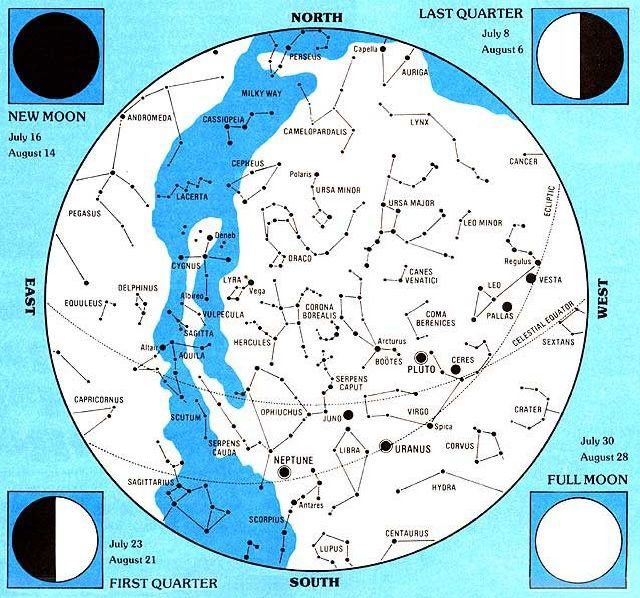
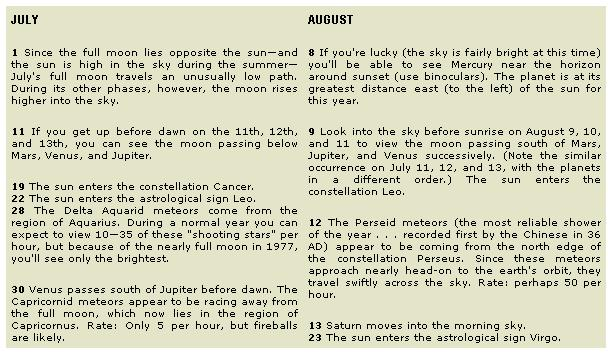
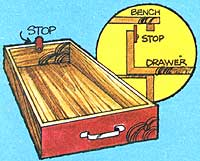
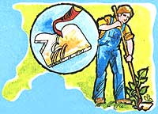
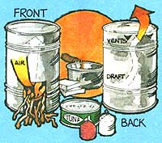
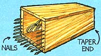
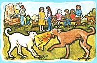
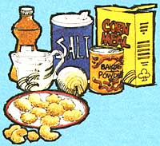

This may be the first generation to set foot on the moon and shoot rocket probes into the reaches of outer space. But, man for man and woman for woman, great granddad and great grandmother-or, for that matter, almost any primitive tribe of almost any past age-knew a lot more about identifying the stars and planets in the night sky than most of us currently do.
And so, with the help of Guy Ottewell (author of Astronomical Calendar 1977, available for $4.95 from the Department of Physics, Furman University, Greenville, South Carolina 29613), MOTHER is going to try to change all that.
The foldouts in Issue Nos. 43 through 48 are being printed in the form of an old-time almanac and star chart. Save the series. Practice with it (directions for using the maps appear in MOTHER NO. 43). And, if you're a typical child of our modern TV-dominated society, you should know one heck of a lot more about the heavens by the end of 1977 than you did at the beginning.
The stars and their constellations are a fixed background in space, occupying the same positions on the same dates from one year to the next (except for changes so small that precision instruments are required to measure them). Much closer, however, is a movingforeground of objects found within our solar system: the sun and the moon (which we'll discuss in Issue No. 47), planets, asteroids, comets, and meteors.
Some of the most interesting of these bodies-the nine planets-are (in order of their distance from the sun): Mercury, Venus, Earth, Mars, Jupiter, Saturn, Uranus, Neptune, and Pluto. Each, of course, has its own unique characteristics, which make an in-depth study truly fascinating.
Unfortunately, only Venus, Mars, Jupiter, and Saturn are easily located in the sky . . . and to do so the observer needs to know in what constellation to look. Mercury (the smallest and closest to the sun) is frequently hidden by Ole Sol's glare, but can be seen when projected to either the right or the left of the sun in its orbit. The outermost planets-Uranus, Neptune, and Pluto-are invisible to the naked eye. However, it's possible (under ideal conditions) to spot Uranus and Neptune with binoculars if you know their exact whereabouts. Pluto, on the other hand, can be seen only with a good telescope.
In addition to the nine major planets, the solar system contains a large number of lesser planets (over 1,500 have been identified)-called asteroids-which are perhaps the wreckage of a larger planet that once lay between Mars and Jupiter (where most of these bodies are found). They vary from a few to several hundred miles in diameter, and are hard to find (you need a telescope). The four largest are Ceres, Pallas, Juno, and Vesta . . . all of which are in the mid-evening sky during July.
The most mysterious members of our solar system are the comets. Most of these bodies are very faint and appear unexpectedly. But since new comets are named for their discoverers, searching for them is a popular hobby.
As a comet travels through space, it leaves behind a loose cloud of dust and rocks which are invisible to us until the earth happens to encounter them in its orbit. Then the friction of the atmosphere causes the objects-known as meteors (some evidence suggests that all meteors originated from comets)-to glow and vaporize. We've all seen these "falling stars". A meteor shower, then, is simply a high concentration of meteors entering the earth's atmosphere in a relatively short period of time.
There'll be no more pulling packed drawers all the way out and dumping their contents on the floor if-on that next rainy afternoon-you take the time to add a stop to each sliding mini-storage chest.
Screw a small block of wood to the inside or front surface of each drawer's back panel. The little stop should be located, of course, so that it sticks up high enough to hit the inside of the cabinet's front . . . thereby preventing the sliding box from coming completely out. Be sure to use a screw-rather than nails or glue-to hold the stop in place. That way, you can always reach in and remove the block with a screwdriver whenever you do want to take the drawer all the way out of the cabinet.
Cut and sharpen a "V" notch into one side of your garden hoe and you'll find it much easier to nip off those tough weeds that seem to delight in growing in tight corners. The V won't slip off as you bear down on a particular weed, and the edges of the notch-protected as they are from constantly chopping into the ground-will stay sharp an uncommonly long time.
Although homegrown seeds may not be as predictable as those obtained from commercial producers, saving seed from your garden does have certain advantages: [1] It's a real money-saver. [2] It's a practical way to preserve that "special" variety of plant which is particularly suited to your garden. [3] It's a good alternative for the organic gardener who wants to be sure that his future plants are free of chemicals. And [4] it's a truly fascinating project for anyone willing to spend the extra time required.
For best results, remember:
Let only the best plants (the hardiest, tastiest, earliest, longest bearing, most disease resistant . . . whatever characteristics you value) set seed. Preserve only standard varieties. Seeds of hybrids will often revert to an earlier ancestor, or even be sterile. To obtain seeds true to a parent plant, make sure no other varieties are located nearby (wind, insects, or other agents are likely to cross-pollinate the crops). Or-though it's a bit more trouble-protect the selected blossoms by covering them early with a paper bag hand pollinating the flowers with a small, soft brush run over the stamens and pistils of each, and replacing the bag until fruit begins to form. Whenever possible, allow the seeds to dry while still attached to the parent plant. If seeds are contained in a fruit, wait until that fruit is overripe. . . then pick, scrape out the seeds, and soak them in water for a day or two until they begin to ferment. Remove the pulp and immature seed (which floats to the surface), and dry the remains on sheets of paper. Store the thoroughly dried seeds in paper envelopes or glass jars in a warm-but not hot-place (preferably away from light). Date the containers, and-for best germination-use each year's group the following season.
No batch of seed-either homegrown or purchased-will germinate 100 percent . . . so plant your garden rather thickly and thin the crop-as needed-later.
It's traditional to seal home-canned jelly with a cover of melted paraffin . . . and just as traditional to cuss the plugs of congealed wax later when the jars are opened. You can lick the problem completely, however, if-the next time you put up jelly-you pour on only a small amount of paraffin first, lay a clean string across the glass, and then add the rest of the wax. The ends of the string will make handy handles for removing the paraffin whenever you desire.
If the youngsters pitch camp in the back yard this summer-and beg to be able to "rough it" by cooking their own vittles-why not discourage the tads from setting the lawn afire by encouraging them to make a simple camp stove from recycled materials?
All you really need to do is cut one hole at the open end of a large tin can (for fuel) and another in the opposite side near the closed end (to create a cross draft). A few twigs, a couple of candles, or a little canned heat ignited under the modified can-then-will give plenty of warmth for cooking bacon and a few beans.
To take the project one step further, however, you can rig up a longer-burning heat source that'll brown a hamburger, fry an egg, or even grill a steak atop the homemade cookstove.
[1] Cut an old newspaper into long strips about 1-1/4" wide (the height of an empty tuna fish can), [2] begin rolling the paper-adding one strip at a time to the growing circle-until you obtain a tight "wheel" of newsprint that will fit snugly into your metal food container, and [3] pack the compact "wick" into the tuna fish can. Now fill the tin with hot wax (saturate the paper). After the creation hardens, you'll have a candle-like heat source that lights easily and burns for hours!
The authors of most cookbooks do their readers a disservice when they state that tomatoes are easily peeled if first dipped in boiling water. Were those same authors to actually try the idea, they'd find the following method much superior:
Completely cover the tomatoes with boiling water for one-half minute, then place the fruit in chilled water until it's perfectly cold. At that point, the skins can be slipped off quite easily, leaving the tomatoes as firm and as unbroken as before they were scalded.
Most of us fairer-skinned folks have accepted that all-too-common summertime malady-sunburn-as a simple, inevitable fact of outdoor life. Though only time will actually heal the burn, a couple of old-time remedies will help to temporarily relieve the discomfort.
For skin that's just slightly reddened, try splashing on apple cider vinegar and gently rubbing it in. The liquid may smell awful . . . but it'll have a pleasantly cooling effect.
If blisters begin to pop up over the burned surface, carefully cover the area with a sterile dressing soaked in a solution of two tablespoons baking soda to one quart of water. And in all cases, be sure to contact a doctor if nausea or a fever develops.
Nothing tastes better the whole year through than homemade wines, pies, jellies, and jams created from summer's sweetest of fruits: the berries. But picking the gallons of tiny morsels needed for these treats can be a very time-consuming-and painful (if you have to fight the battle of the thorn)-chore . . . unless, that is, you learn from the Indians and fashion your own version of their old-time berry picker.
The original Indian berry picker was usually a scoop carved out of wood with a series of long, V-shaped teeth at its mouth. However, if you're not inclined to spend hours whittlin' on such a project, simply find an empty tin can, or nail and glue together some lightweight wood to form an open-ended box. Then solder-or hammer-some long finishing nails (about 1/8" in diameter) 3/8" apart on the lower half of the container. Finally, file the metal pieces to reasonably sharp points.
It takes no time at all to run this container's "teeth" through the plant's limbs, gathering berries and-no doubt-a few leaves or twigs in the process. Then, to separate the fruit from the debris, just empty your load onto a stretched and slanting blanket. The berries will tumble to the bottom where they can be collected, while the other matter will catch on the fabric to be shaken away later. Or-if you prefer-simply dump the berry picker's contents into a water-filled pail and skim off the leaves as they float to the top.
A real, old-time, traditional Southern fish fry or barbecue never seemed to be complete without a whole gaggle of bluetick hounds hanging around the edges of the action. Naturally, the canines always set up a horrendous din when the folks began to eat . . . which-just as naturally-always inspired the people at the gathering to throw together something cheap and filling to shut the dogs up.
For this purpose, over a period of time, dogs and humans kind of compromised on thumb-sized cakes of corn bread deep-fat fried in whatever grease was handiest. The improvised canine chow was good enough to quiet the hounds (hence the name "hush puppies"). It also, as many Southerners soon learned, went mighty well with whatever the people were eating. The word spread. Hush puppies are now regarded as a genuine Southern delicacy, and the following recipe is as traditional as any we've found:
2 cups fine cornmeal
2 tablespoons baking powder
1 teaspoon salt
1 cup onion, finely chopped
1-1/4 cups milk
1/2 cup water
cooking oil
Mix the cornmeal, baking powder, and salt together and then stir in the onion. Blend in the milk and water next, adding more cornmeal as necessary to make the dough stiff enough to be handled. Shape the batter into small round or elongated cakes, drop them into deep, hot fat (360°F), and turn them occasionally until they're well browned.
Hush puppies are most flavorful when fried together with fish and served piping hot.
|
 |
 |
 |
|
 |
|
 |
|
 |
 |
 |